刷写 Quansheng UV-K5V3 和 K1 对讲机#
以及 CHIRP 的使用
在开始任何操作之前：
1. 请务必确认你手上的是 K1 或 K5V3 版本！！！
V1 版本没有任何标识。 V2 和 V3 版本通常会在电池仓下方的标签上印有相应的版本标识。
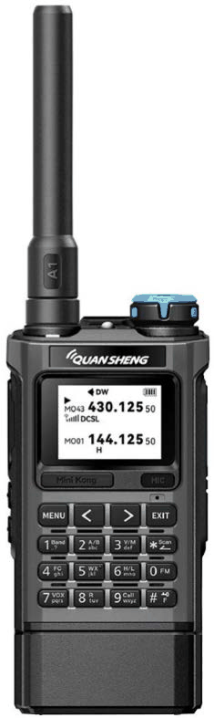
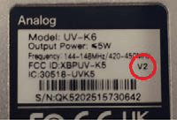
不同版本之间的固件不能通用。如果你把为其他版本准备的固件刷进对讲机，结果就是把机器刷成砖。
V1 版本的 Bootloader（引导程序）版本号以 2、3、4 或 5 开头 V2 版本的 Bootloader（引导程序）版本号以 1 开头 V3 版本的 Bootloader（引导程序）版本号以 7 开头
把对讲机切换到刷机模式并连接后，可以在 k5prog-win 中查看这一信息：
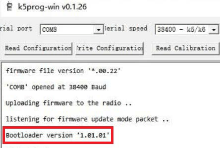
请务必备份原厂校准数据
目录：
1. 在 Quansheng UV-K5(V3) 和 UV-K1 对讲机上安装 KARINA（Autumn rain）固件的简要说明。
2. 固件安装的详细步骤。
3. CHIRP 的使用。 3.1. 下载模块 3.2. 配合 CHIRP 使用模块（Karina） 3.3. 从别人的文件中复制频率。
4. 常见问题、可能出现的故障及其解决办法。
1. 安装 KARINA（Autumn rain）固件的简要说明#
适用于 Quansheng UV-K5(V3) 和 UV-K1 对讲机：
本说明仅适用于刷写 K5(V3) 或 K1。 试图把 K5V3（或 K1）的固件刷进 K5V1 对讲机 = 机器变砖。
如果你已经有刷机经验，这份简要流程就够用了。 如果没有，下面还有一份带说明和图片的详细流程。
刷机之前，请把电池充满电。
备份与刷机的简要流程
1. 打开对讲机，用 USB Type-C 线（或 Kenwood 写频线）连接电脑。
2. 备份原厂校准数据和配置。
3. 关闭对讲机，然后按住 PTT 键再开机。
4. 用你习惯的刷机工具安装固件（带 packed 标记的文件用于原厂刷机工具 qpscps；不带 packed 标记的文件用于其他任何刷机工具）。
5. 请把数据线从电脑上拔下来！！！ 关闭对讲机，然后按住 PTT+EXIT 再开机（按住大约 2 秒）——内存被清空。
6. 再次打开刷机工具，把原厂校准数据写回去。
7. 写入随 Karina 固件一起提供的校准数据。
8. 把配置写回去（如果需要）。或者通过对讲机菜单或 CHIRP 手动完成全部设置 （只有早期版本的配置文件可用；其他固件的配置文件不能用）。
注意！！！ 如果你要分别配置 3 组预设（见设置菜单第 35 项），那么必须对每一组预设分别执行第 5—8 步，并事先在第 35 项中选中所需的预设。！！！
提醒：
校准数据和配置的读取与写入，需要在对讲机处于正常模式开机的状态下进行。
刷机则需要对讲机在刷机模式下开机（关机状态下按住 PTT，保持不放再开机）。此时屏幕保持黑屏，手电筒 LED 点亮，表示对讲机已进入刷机模式。
2. 固件安装的详细步骤#
刷机之前，请把电池充满电。
1. 打开对讲机，用 USB Type-C 线（或 Kenwood 写频线）连接电脑。
！！！面向中国市场的 Quansheng UV-K1 对讲机 在 USB Type-C 连接上存在问题，建议对这些机器使用 Kenwood 写频线。
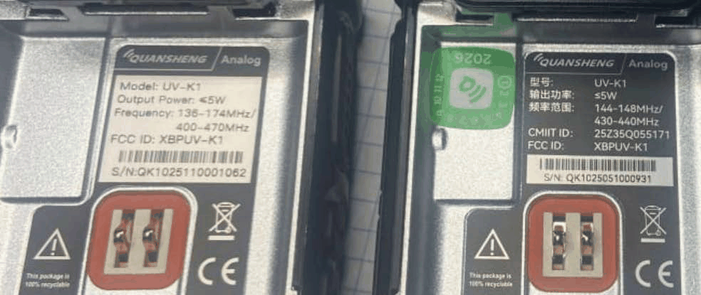
欧洲市场版本
中国市场版本
2. 备份校准数据和配置
为此，请打开 k5prog-win（推荐使用 v0.1.26 版本）并进行备份：
校准数据：点击 read calibration，保存原厂校准数据。 配置：点击 read configuration，保存原厂配置。
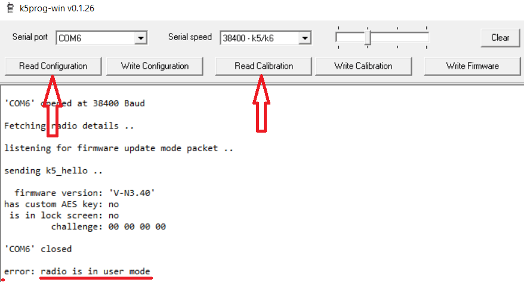
3. 关闭对讲机，然后按住 PTT 键再开机。
4. 打开原厂程序 qpscps（ https://en.qsfj.com/support/downloads/8740 ），选择 COM 口和刷机菜单（alt+D，第三项）。
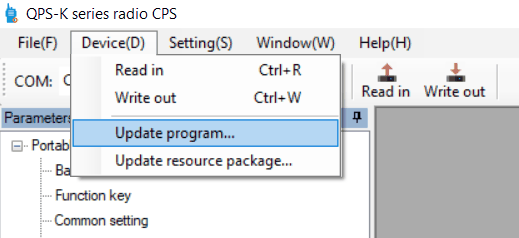
指定 packed 文件的路径，然后按 Update 刷写对讲机。
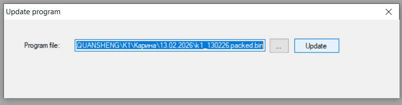
（如果你是通过网站 https://armel.github.io/uvtools2/ 在线刷机，那么请在 Flash Firmware 选项卡中按 Choose file，并选择不带 *packed*** 标记的固件，
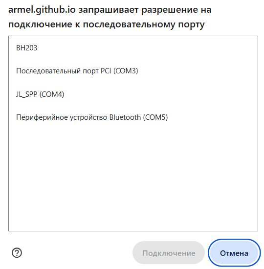
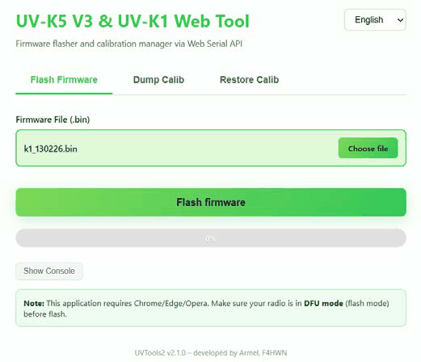
按 Flash firmware，选择 *COM port****，然后刷写对讲机。）*
5. 请把数据线从电脑上拔下来！！！ 关闭对讲机，然后按住 PTT+EXIT 大约 2 秒再开机——内存被清空。
6. 再次打开 k5prog-win，用 Write calibration 按钮把原厂校准数据写回去。
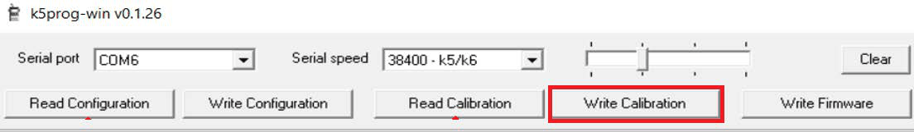
（这一步也可以通过网站 https://armel.github.io/uvtools2/ 完成（如果你的校准数据是用 k5prog-win 保存的，需要把文件扩展名由 bin 改为 dat）。方法是：在 Restore Calib 选项卡中用 Choose file 按钮选择所需文件，按 *Restore Calibration Data**，选择* *COM port****，然后写入校准数据。）*

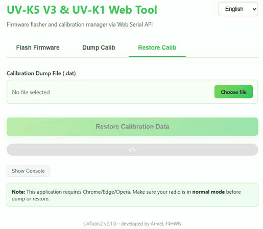
7. 再写入一次校准数据，这次选择 Karina 的校准数据（撰写本说明时为 calib5）——步骤与第 6 步完全相同。
8. 使用 k5prog-win 的 Write configuration 按钮把配置写回去。 （只有早期版本的配置文件可用；其他固件的配置文件不能用。）
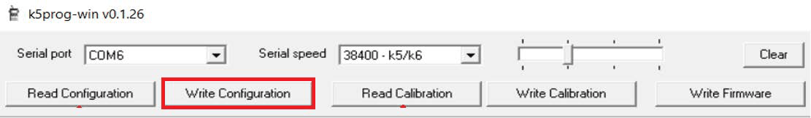
如果你需要从 Karina 固件换成别的固件#
（因为它的内存布局与其他固件不同） 你必须执行以下操作：
1. 清空内存（关闭对讲机，然后按住 PTT+EXIT 键再开机（按住大约 2 秒））
2. 安装任意一款其他的第三方（MOD）固件（原厂固件不行，因为它不允许写入校准数据）
3. 把你原始的原厂校准数据写回去。
4. 正常使用对讲机，或者随你喜欢再安装其他任何固件（包括原厂固件）。
3. CHIRP 的使用#
3.1. 加载模块
重要！！！ 目前还没有专门为 Karina 固件编写的 CHIRP 模块。现有的模块是为其他固件编写的，与 Karina 或多或少兼容。下面提供的模块最初是为 F4 固件编写的，部分地方已针对 Karina 做了适配。即便如此，也不要在 CHIRP 里把看到的东西全都改一遍，因为兼容性并不完整。
使用 CHIRP 时必须先往里面加载一个模块（Karina 请使用压缩包中的模块；其他固件则必须选择与之匹配的模块）。方法是：启动 CHIRP，点击 "HELP" 并开启开发者模式。然后重启 CHIRP，打开 "File" 菜单，选择 "Load module"，再从压缩包中选择相应文件。
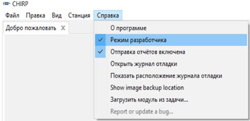
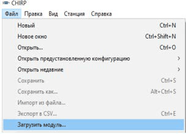
！！！重要： 关闭 CHIRP 时模块会被卸载，因此每次启动 CHIRP 都必须重新加载一次。
接下来： Radio -> Download from radio -> 选择 COM 口 -> Vendor（Quansheng）-> 在 Model 字段中选择与你的固件对应的模块。
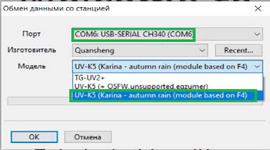
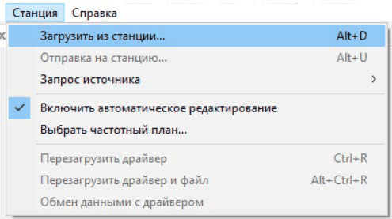
3.2. 配合 CHIRP 使用模块（Karina）
如上所述，不建议在 CHIRP 中修改每一项功能，因为模块并非完全兼容。下面举例说明哪些可以放心编辑（用绿色标出），哪些强烈建议不要改动（用红色标出）：
在第一个选项卡（信道存储）中，所有内容都可以放心编辑。
在第二个选项卡的 Basic Settings 中，你可以随意修改以下功能（除开机问候语外，其余都可以在对讲机菜单中修改）：
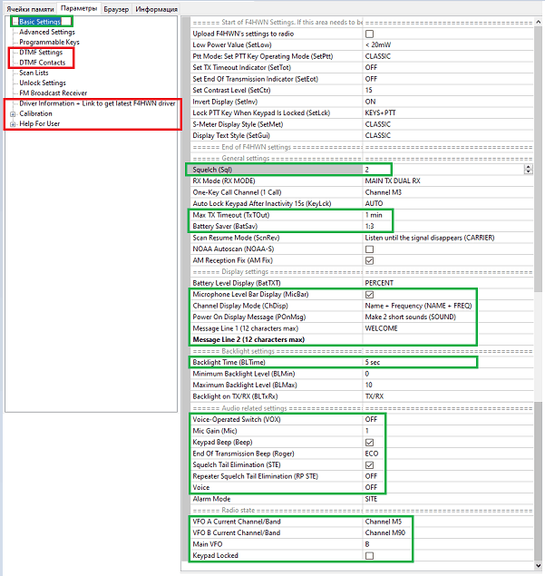
在第二个选项卡的 Programmable Keys 中，你可以修改侧键 FN1 和 FN2 的设置。这些设置只能通过软件修改，无法在对讲机菜单中修改：
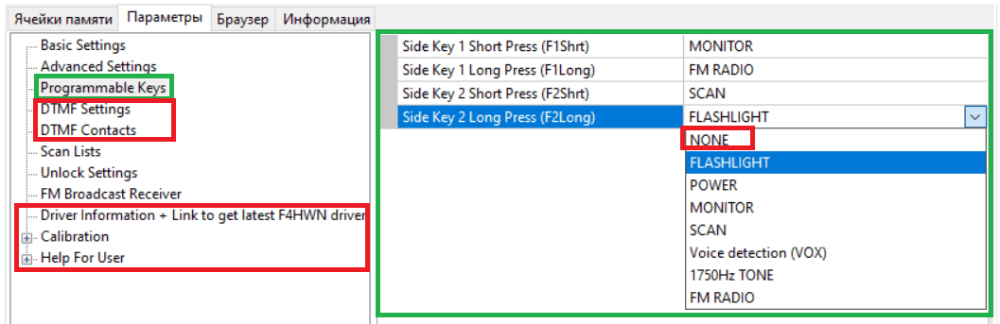
请确保侧键的短按和长按都被赋予了功能（如果设为 NONE，对讲机会被锁定并要求输入密码！）。
在第二个选项卡的 ScanList 中，你可以设置默认扫描列表，并为扫描列表 1 和 2 选择扫描时的优先信道（这些设置在 CHIRP 和对讲机菜单中都可以修改）：
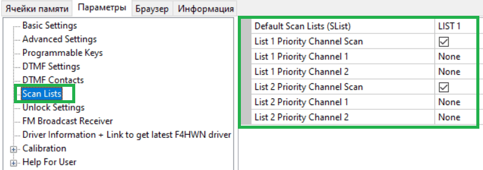
在第二个选项卡的 Unlock Settings 中，你可以选择频率规划的发射锁定（这些设置在 CHIRP 和对讲机的隐藏菜单中都可以修改）：
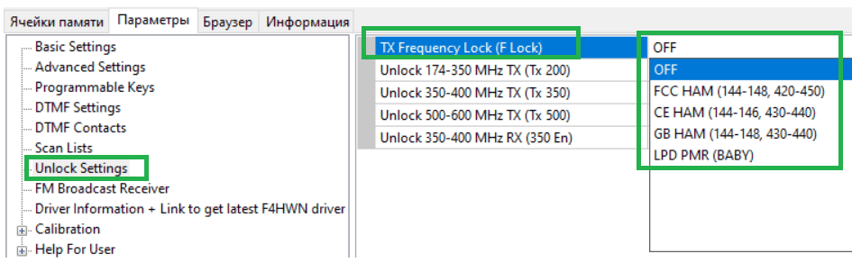
在第二个选项卡的 FM Broadcast Receiver 中，你可以指定存储在内存中的调频广播电台频率（这些设置在 CHIRP 和对讲机的隐藏菜单中都可以修改）：
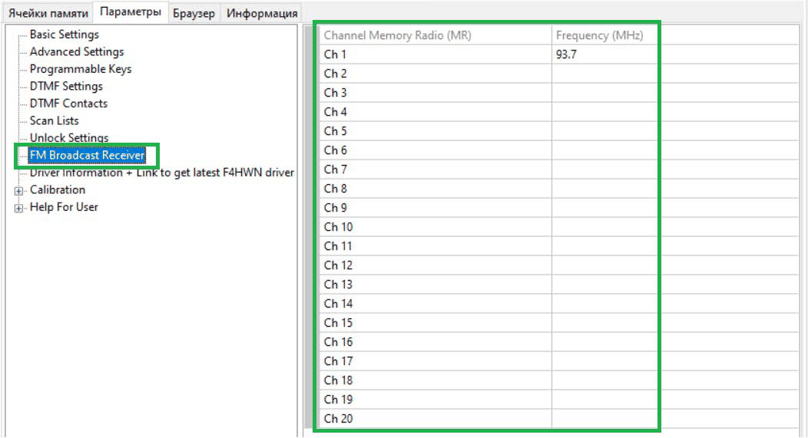
3.3. 从别人的文件中复制频率
不建议把别人的频率文件、或者来自其他固件的文件直接写进你的对讲机。CHIRP 和 PSCPS 本质上写入的是 Configuration（对讲机的配置），而它的结构在不同固件版本之间可能不同（甚至同一位开发者的不同发行版之间也可能不同）。
写入这种来历不明的配置文件可能导致对讲机工作不稳定（收不到信号、接收效果差、发射或调制出现问题等等）。
如果你需要把别人文件中的频率复制到运行 Karina 的对讲机里，请按以下步骤操作：
- 在 CHIRP 中打开它（如有必要，先加载所需的模块——不同固件的模块可能不同）
- 加载 Karina 对应的模块
- 把对讲机连接到电脑，选择 Radio -> Download From Radio；在打开的菜单中选择端口、对讲机厂商和所需的模块
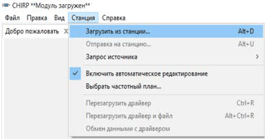
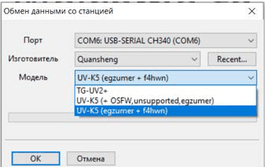
此时你会打开两个选项卡："源"文件和你自己的对讲机。
- 在"源"文件的选项卡中选中你需要的频率并选择 Copy，然后切换到你自己对讲机的选项卡，选中你希望开始粘贴的第一行，把频率粘贴进去。（下面是在两台互不兼容的对讲机——一台 Baofeng 和一台 Quansheng——之间复制数据的示例） - 这种复制方式是安全的，因为它只复制信道（频率、名称和信道设置），不会影响对讲机的整体设置
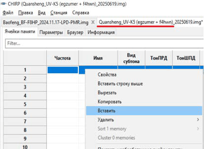
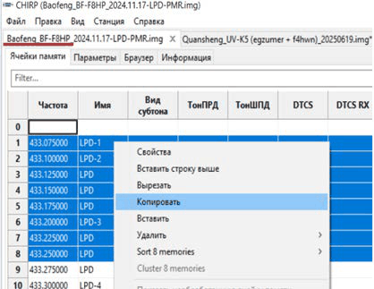
4. 常见问题、可能出现的故障及其解决办法#
问题与疑问——可能的解决办法、说明和解答。
安装并配置固件后，在 VFO 模式下无法输入频率
安装固件时，在用 PTT+EXIT 清空内存之前，必须先把数据线从电脑上拔下来。你需要重新执行一次清空内存的操作，然后写入校准数据并重新配置对讲机。
1. 我可以在哪些频率上发射？
有一些民用无线电频率允许免执照使用。通常是：
- CB（25.165 – 29.445 MHz），发射功率 4.0-12.0 W
- LPD（433.075 – 434.775 MHz），发射功率 0.01 W
- PMR（446.00625 – 446.19375），发射功率 0.5 W
在一些国家还会使用 FRS 和 GMRS 频段。
2. 我不可以在哪些频率上发射？
没有特别许可时，在民用频段之外发射是法律禁止的。其余所有频段都由别的业务使用，从业余无线电爱好者到政府部门，包括卫星、蜂窝网络、空中交通管制员和航空器、气象台站、内河与海上通信、军方等等。如果你干扰了其中任何一种业务的工作，可能要按所在国家的法律承担责任。
3. Quansheng UV-K5 在哪些频率上收发？
在 Karina 固件中，所有频段的接收和发射都是开放的（见第 2.2 节"工作频段"）。
对于没有做硬件改装的对讲机，只有在厂家声明的频段内发射才不会有烧毁机器的风险：136-174 MHz / 400-470 MHz。
4. 不接天线发射会怎么样？
不接天线发射，以及使用为其他频段调谐的天线发射，都会烧毁对讲机的末级功放。
5. 对讲机能在 CB 频段发射吗？我能和货车司机通话吗？
在 Karina 固件中，27 MHz 频段默认对接收和发射都是开放的。
要接收，你需要一副为该频段调谐的天线。
但是，用未经硬件改装的对讲机在这个频段发射并不能获得可用的通信效果（输出功率实在太低）。同时，由于对讲机的物理特性，在这个频段尝试发射会在航空频段上产生干扰，并且会烧毁对讲机的末级功放。
6. 为什么在 CB 上没人能听到我？
在出厂状态下，对讲机在 CB 频段的发射功率不超过 0.01 W。因此，不做物理改装就在这个频段发射，不仅毫无用处，而且对机器本身也是危险的。
7. 为什么在车里通信效果很差？
车身会屏蔽无线电信号。为了获得稳定的通信，建议在车身外部安装外置天线。
8. 到底为什么要刷机？
原装出厂的对讲机工作可靠，能够完成它应有的功能。
第三方固件扩展了对讲机的功能，提供了更多、更灵活的（专业级）设置、更高的扫描速度、带图形显示的扫描（频谱分析仪模式）等等。
9. 哪款固件最好？
最适合你需求的那一款。
10. 我该怎么保存原厂固件？
保存原厂固件没有意义，因为它在互联网上和厂家网站上都可以自由获取。更重要的是保存原始的校准数据（它可能是你这台机器独有的）和配置文件。这项工作用 k5prog 程序完成。
11. 通过机身内置的 Type-C 口连接时，电脑看不到对讲机
对讲机内置的 Type-C 口仅用于给电池充电。
刷机需要使用带 KENWOOD 型接头的专用写频线（模拟 Baofeng 对讲机等机型用的线即可）。
12. Baofeng 的线能用来刷机和写频吗？
可以（要用模拟机的那种）。
13. 刷机应该从哪里开始？
任何刷机操作都应该从检查电池电量开始。如果电池电量低于 50%（约 7.2 V），刷写过程可能出错或不完整。
刷机需要购买或自制一条带 Kenwood 型接头的写频线，并在电脑上安装这条线的驱动程序。
准备好刷机工具。准备好固件文件本身。用你买到的数据线把开机状态的对讲机连到电脑上，用程序备份你的校准数据和配置文件。然后让对讲机进入刷机模式连接，再用程序写入固件文件。
14. 哪里能找到详细的刷机说明？
参见"QUANSHENG UV-K5 及其衍生型号快速刷机指南"一节。
15. 电脑看不到对讲机
- 数据线没有完全插到底（第一次插的时候非常紧，往往要插到能听见"咔哒"一声为止）。
- 没有安装数据线驱动，或者装错了驱动。
16. 刷机该用哪个程序？
第三方固件应按以下方式刷写：
- UV-K5、K5(8) 和 K5+ 版本应使用 k5prog-win 刷写——推荐 1.26 版本；
- UV-K5+ 版本（带 Type-C 口的）应使用 k5tools 刷写。
17. 我刷完机了，但开机时它要求输入某个密码
试试所有数字相同的组合——000000 或 111111——或者 123400，也可以在关机状态下按住 MENU+EXIT 并保持不放再开机。
另外，如果你在用 CHIRP 或 PSCPS 配置时把侧键 FN1 和/或 FN2 设成了 NONE（未分配功能），对讲机可能会被锁定并在开机时要求输入密码。
如果这样还不行，就用 REBORN 固件清空对讲机的内存——见本指南第 6 节。
18. 给对讲机写频（配置）该用哪个程序？
CHIRP 或 PSCPS。要使用 CHIRP，你需要加载模块。
19. CHIRP 是什么，它能做什么？
它是一款用于给对讲机写频的程序。它可以编辑信道，开启和关闭各种功能，包括那些在对讲机自带菜单里没有的功能。
20. 我写入了自己保存的频率（来自其他固件）或别人的频率文件，结果对讲机表现得很奇怪
来自不同固件版本的配置文件可能让对讲机工作不正常，因此不建议写入。同样也不建议写入别人的配置和设置文件。
如果你需要写入别人文件中的频率（或者你自己的文件，但是用其他固件做的），请使用 CHIRP：打开那个文件，读取你的对讲机——这时会出现第二个选项卡——然后从那个文件的选项卡中复制你需要的频率，粘贴到你对讲机的选项卡里。别忘了在读取文件之前先加载合适的模块。
21. 对讲机有加密功能吗？
对讲机没有信号加密功能，但有扰频器（语音加扰）功能。请注意，在许多国家，民用无线电通信中使用加密、扰频器和其他信号遮蔽功能是法律禁止的。
22. 为什么接收时绿色 LED 亮起，但喇叭里却没有声音？
- 检查你是否设置了接收亚音（R-DCS 和 R-CTCS）；
- 检查两台对讲机是否使用相同的调制方式（特别是 FM）。
23. 什么是亚音？
亚音是一种随语音一起发射的、人耳听不见的附加信号。它起到类似"敌我识别"的作用（通过对接收信号进行过滤）。如果设置了亚音，你的对讲机会拒收该频率上的所有信号，只有在检测到带相同亚音的信号时才会打开接收。
反过来，没有设置亚音的对讲机在接收时能听到该频率上所有其他对讲机的信号，无论对方是否使用亚音。
24. 扫描时检测到的非标准 55 Hz 亚音是什么？
见 Karina 固件说明书第 5 页第 22 项的说明。
25. 为什么我能听到一位通联对象，却听不到另一位？
这说明一位操作员的信号强到足以被你听到，而另一位的信号太弱了。
原因可能是你的天线效率不高，或者其中一位操作员离你更近，又或者只是第二位操作员的信号太弱。
相反的情况也有可能：某一位通联对象的信号太强，使你的接收机过载，于是接收机被过强的信号"噎住"而保持沉默。
26. 我把对讲机设成扫描频率了，为什么还是谁也听不到？
要想听到别人，首先得决定扫描什么范围。"一次扫完所有东西"是得不到结果的。
比如说，你想以 25 kHz 的步进扫描 100-200 MHz 范围（频率（VFO）模式下的扫描速度约为每秒 15 个频点），那么：
100/((0.025)*15)=266 秒（也就是差不多 5 分钟）才能完成一遍扫描。更高效的做法是缩小搜索范围，或者使用已配置好的预设在频谱分析仪模式下开始扫描。
27. 我可以用对讲机呼救吗？
在特殊情况下，而且只有在人员生命健康受到直接威胁、且无法通过其他技术通信手段求救时，你才可以发出 SOS 或 MAYDAY 遇险信号。
28. 在哪些频率上呼救最容易被听到？
并不存在全球通用的遇险频率。有海上频率、内河频率、山地救援频率等等。这些频率在不同地区和不同国家之间也可能不同。当你计划前往某个地区时，至少应该事先了解当地使用哪些应急通信频率。
不过，确实有一些公认的呼叫频率，在这些频率上你被听到的机会更大：
- 433.500 — 70 厘米波段的通用呼叫频率
- 446.09375 — PMR 频段的通用呼叫频率
- 145.500 — 业余无线电爱好者的通用呼叫频率（供持有执照和许可的火腿之间通联）
这些频率同样可能因地区而异。不建议长时间占用它们。你随时可以先建立联系，然后约定转到其他频率。
29. 左上角不时亮起的 S 符号是什么？
见 Karina 固件说明书第 5 页第 14 项的说明。
30. 为什么我修改了发射功率（或带宽、调制方式、亚音、频率偏移）之后，切换到别的信道再切回来、或者关机再开机，改动就没保存下来？
见 Karina 固件说明书第 5 页第 13 项的说明。
31. 我按 PTT 时屏幕显示 DISABLE——该怎么办？
见 Karina 固件说明书第 7 页第 36 和 37 项的说明。
32. 我给对讲机接了 Type-C 线，但它不充电
通过 Type-C 充电是一项附加功能。它在电池电压较低时才开始充电，而且不会把电池充到标称值。如果你能用座充给对讲机充电，就用座充。
33. 我的对讲机显示的电池电压不对——该怎么办？
如果对讲机屏幕上显示的电池电压低得离谱（约 0.25 V）或高得离谱（600 V），那就是校准数据已经损坏的第一个征兆：你需要先写入原厂校准数据，然后才写入 Karina 的校准数据。
如果这样还不行，就按固件说明书所述执行清空内存的操作，然后重新安装固件和校准数据。
如果电压显示基本正确，与万用表量出的数值相差大约 0.2-0.5 V，那么这是原厂校准下的正常情况。可以用 HEX 编辑器修改校准文件中 140/6 单元格的数值来进行调整（我这里这个数值是 B0，你的可能不同）。
34. 为什么屏幕显示 6.0 V 时对讲机就已经在关机了？
电池的工作电压范围是约 6.0 V - 8.4 V：
- 约 8.4 V = 100%
- 约 7.2 V = 50%
- 约 6.0 V = 0%
把电池放电到 4 V 以下会导致电池劣化。